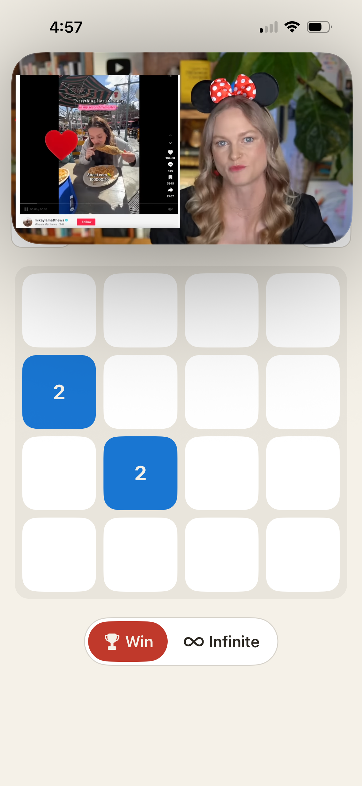

Background: merge-classic-pip-large.png (real Large-top PiP overlay).
Six overlays show every PiP zone from REQUIREMENTS VIDEO-02 against the same board.
mines-hard-dracula-pip-small-{tl,tr,bl,br}.png.

| Zone | Controls | Board |
|---|---|---|
| Large top | Compact row bottom (Back | Score | Mode picker | Best/time | Settings) | Vertical compression of compact row |
| Large bottom | Compact row top; same slots | Square absorbs squeeze |
| Small TL | Back → top-right | Unchanged |
| Small TR | Settings → top-left | Unchanged |
| Small BL | BL → BR | Unchanged |
| Small BR | BR → BL | Unchanged |
See merge-dracula-pip-large.png for Large-top under Dracula
preset (CLAUDE.md §8.12 legibility audit).